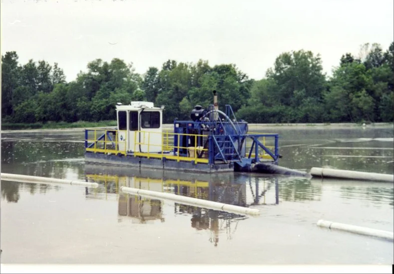

Lagoon and Pond Cleanout Filter Press Rentals
PacPress rents filter presses for lagoon and pond cleanout projects that need on-site sludge dewatering to recover storage capacity.

Common Rental Applications
Typical ways PacPress rental filter presses are used in lagoon and pond cleanouts.
Dredged Sludge Dewatering
Processing sludge removed by dredge into a manageable filter cake.
Lagoon Capacity Recovery
Restoring usable storage volume in wastewater, agricultural, or industrial lagoons.
Pond Cleanout Projects
Dewatering accumulated sludge from stormwater, process, or settling ponds.
Hauling Volume Reduction
Reducing the volume and weight of material that needs to be trucked off site.
Filter Cake Handling
Producing filter cake suitable for testing, storage, or disposal.
When Renting Makes Sense
Capacity recovery projects
A lagoon or pond has lost usable capacity and needs sludge removed to a defined depth.
Hauling cost reduction
Dewatering sludge on site before hauling significantly reduces load volume and trucking costs.
Project-based dredging
A cleanout project has a defined start and end date rather than an ongoing operational need.
Compliance-driven cleanouts
A permit or inspection requires capacity to be restored on a set timeline.
Sizing & Quote
Tell Us What You Need to Process
Share the material, approximate volume or flow, project location, timeline, and available utilities. PacPress can help identify the rental press and support equipment to discuss.
Common Questions
Frequently Asked Questions
PacPress provides filter press rentals for lagoon and pond cleanout projects that need on-site sludge dewatering. A rental filter press can turn dredged sludge into a dry filter cake, reducing hauling volume and recovering lagoon capacity on a project-based timeline.
Useful sizing information includes material or slurry type, flow or volume, solids percentage if known, desired cake dryness, timeline, site location, available utilities, and any support equipment needs.
Need a Rental Filter Press for Lagoon and Pond Cleanouts?
Tell us about your project and a PacPress specialist will help recommend the right rental setup.